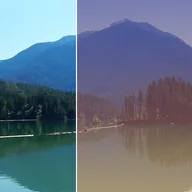

Sovrapposizione sfumatura

Sovrappone al livello una sfumatura a due colori, con forme e metodi di fusione a scelta.
Impostazioni
| Impostazione | Tipo | Intervallo | Predefinito |
|---|---|---|---|
| Colore 1 | Colore | – | #3A1C71 |
| Colore 2 | Colore | – | #FFAF7B |
| Forma | Scelta | Lineare, Radiale, Riflessa, Angolo | Lineare |
| Angolo | Angolo | Da -360° a 360° | 90° |
| Scala | Numero | Da 0.05 a 10 | 1 |
| Opacità | Numero | Da 0 a 1 | 0.6 |
| Fusione | Scelta | Normale, Moltiplica, Scolora, Sovrapponi, Luce soffusa, Luce intensa, Aggiungi, Scurisci, Schiarisci, Differenza, Scherma colore, Brucia colore | Normale |
| Scostamento | Punto (X, Y) | Da -4000 px a 4000 px | 0 px, 0 px |
| Lunghezza | Scelta | Riquadro, Ovale | Riquadro |